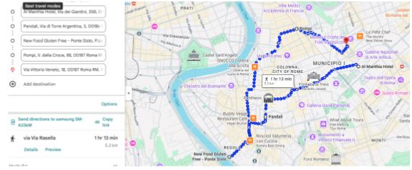
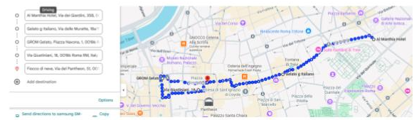
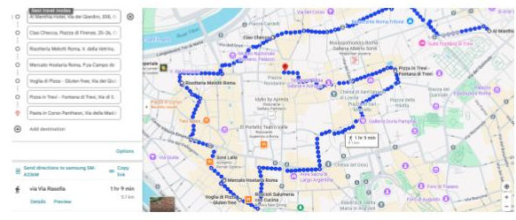
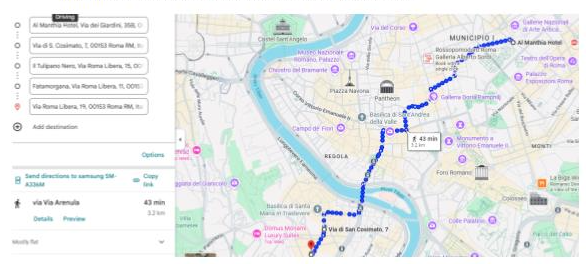
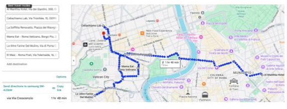
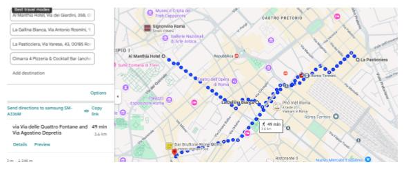

ROMA 🇮🇹
Centro de Roma (Panteón, Piazza Navona y Fontana de Trevi)
Osteria La Fortunata
: cerca del Panteón, el mejor tiramisú.
Pandalí
: dulces y salados para llevar.
New Food Gluten Free
: dulces y pizzas para llevar (4 trozos grandes por 9€).
Pompi Tiramisú
: no es 100% sin gluten, pero tiene opciones aptas increíbles.
Alex Restaurante & Café
: Via Vittorio Veneto 18.

Grom
: heladería famosa, todo 100% sin gluten.
Heladería Buccianti
: Via Giustiniani 18.
Fiocco di Neve
: helados espectaculares cerca del Panteón.
Gelato d’Italiano
: todo sin gluten, incluidos los creps.
Venchi 1878
: chocolates y bombones sin gluten.

Ciao Checca
: comida rápida y saludable.
Risottería Melotti
: especialistas en risottos.
Mercato Hostaria
: top 3 sin gluten en Roma (Campo di Fiori).
Voglia di Pizza
: pizzas increíbles, no toman reservas.
Pizza in Trevi
: al lado de la Fontana de Trevi (reservar).
Pasta in Corso
: muy recomendada por celíacos.
Phanta Rei
: mala atención, comida muy buena.

Trastevere
Mama Eat
(Via di San Casimato 7): pasta, pizza y postres. Muy recomendable.
Il Tulipano Nero
: Via Roma Libera 15, dueño celíaco.
Fatamorgana
: heladería 100% sin gluten, justo al lado de Il Tulipano Nero.
Il Capriccio di Trastevere / Da Isandri
: Via Roma Libera 19.
Tiramisu Merisú Trastevere
: tiramisú con y sin gluten.

Vaticano
Celiachiamo Lab
: tienda especializada en productos sin gluten.
A Gogo Gluten Free
: sandwiches, dulces y pizza para llevar.
La Sofitta Renovatio
: calzone, pizza y tiramisú.
Mama Eat Lab
: pasta, pizza y postres, muy recomendable.
Le altre farine del mulino
: obrador 100% sin gluten.
El Maíz
: restaurante venezolano, arepas 100% sin gluten.

Coliseo y Termini
La Gallina Bianca
: cerca de Termini y Santa Maria la Mayor.
La Pasticciera
: obrador 100% sin gluten, dulce y salado.
Cimarra 4
: pizzería.

Extra:
Trastevere para comer · Gueto judío para comer
← Volver a restaurante
← Volver al inicio